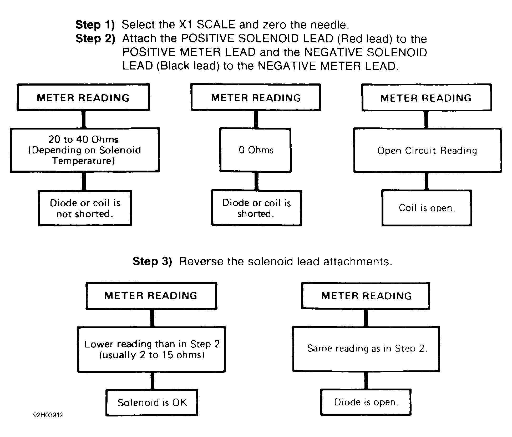

LEMON Manuals
: Even more car manuals for everyone: 1960-2025
Home
>>
Hyundai
>>
2022
>>
Elantra N Line, Standard Trans
>>
Repair and Diagnosis
>>
General Information
>>
Engine Performance
>>
Parasitic Load Explanation & Test Procedures - General Information
>>
Testing For Parasitic Load
>>
Diode Check & Solenoid Test
Diode Check & Solenoid Test
Fig 1: Diode Check & Solenoid Test

Courtesy of GENERAL MOTORS CORP.